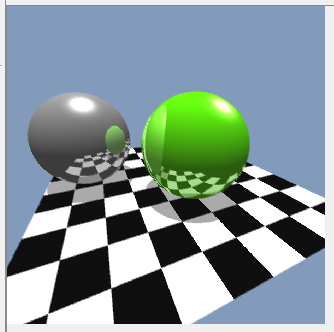

Recent Projects
Ray Tracing SoftwareHere is an image from my personally created Ray Tracer. This Ray Tracer was made in Java and is still under development with more features to be released. (more images to come..) |
Graphics Examples With ThreejsThis 3D star fight project was done with the help of THREE.js which is a WebGL framework.
|
Lord of the Rings SurveyThis project was done as an exercise in using HTML 5 LocalStorage, and JavaScript charts. This web page takes the user through an interactive brief survey about their favorite characters, weapons and places from the series. All survey results are stored using Local Storage. |